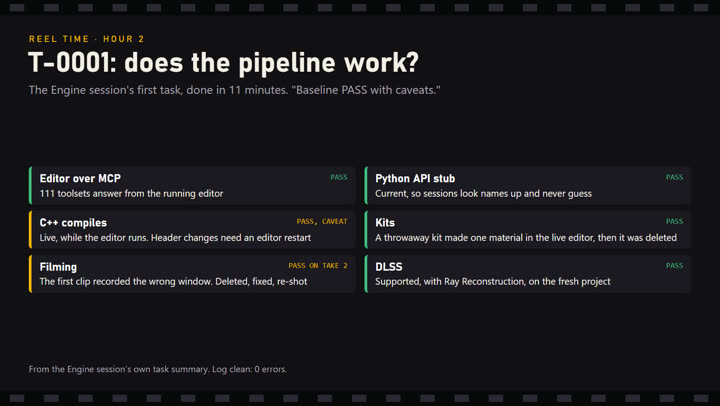
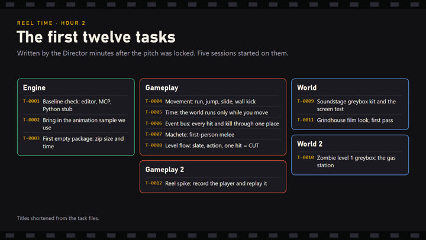
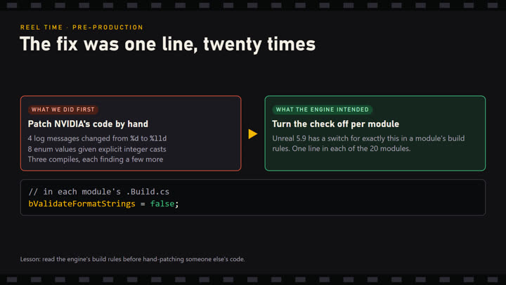
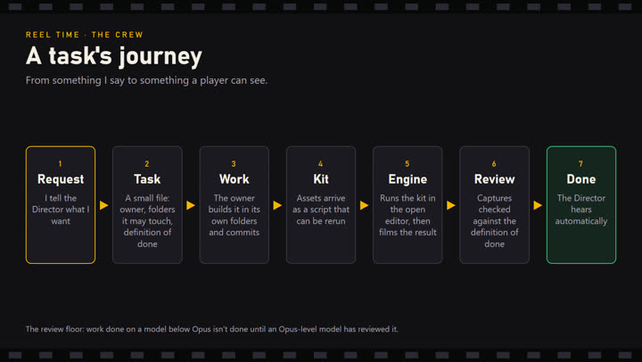

Gallery
19 shots and 2 clips from the build, newest first. Select one to see it full size.

Pass one of the grindhouse look on the screen-test set: grain, scratches, a vignette, frame jitter and a warm cast.
The first set, and a film look that won't hold still Day 1, hour 2

Before: The same camera with the look off and on. Whites go cream, reds go orange, the corners darken.
The first set, and a film look that won't hold still Day 1, hour 2

After: The same camera with the look off and on. Whites go cream, reds go orange, the corners darken.
The first set, and a film look that won't hold still Day 1, hour 2

Wide mark. Rendered offscreen without auto exposure, so it's much darker than the game view.
The first set, and a film look that won't hold still Day 1, hour 2

Low mark, at floor level, looking at the slide wall and its red lintel.
The first set, and a film look that won't hold still Day 1, hour 2

Side mark, blocked. The camera sits right behind the plywood flat.
The first set, and a film look that won't hold still Day 1, hour 2

Three cuts from the Engine session's test clip: walk to the cylinder, turn, walk the wall. The input is scripted.
First footage, and the take that filmed the wrong window Day 1, hour 2

The Engine session's first task: six checks, two with caveats.
First footage, and the take that filmed the wrong window Day 1, hour 2

The template arena, from the clean take. The real soundstage greybox is being built now.
First footage, and the take that filmed the wrong window Day 1, hour 2

The first milestone landed at 06:08, 68 minutes into the jam. Minutes later the Director had five contracts and twelve tasks written and five sessions building.
Pitch locked: Reel Time, nearly three hours early Day 1, hour 2

The first twelve tasks, by session. Movement and time are first because moving is what runs time.
Pitch locked: Reel Time, nearly three hours early Day 1, hour 2

Task T-0005, trimmed. Anything a player can see needs a still and a clip before it can go to review.
Pitch locked: Reel Time, nearly three hours early Day 1, hour 2

Six compile attempts. The first two failures were ours, the next three were one Unreal 5.9 change, and the sixth passed.
Porting NVIDIA DLSS from Unreal 5.8 to 5.9 in 75 minutes Day 1, hour 2

Three compiles of hand patches, then the switch Unreal 5.9 provides for exactly this.
Porting NVIDIA DLSS from Unreal 5.8 to 5.9 in 75 minutes Day 1, hour 2

Launch one was blocked by a version label, launch two crashed on the first frame, launch three came up clean with DLSS only.
Porting NVIDIA DLSS from Unreal 5.8 to 5.9 in 75 minutes Day 1, hour 2

What the DLSS plugin reported when asked directly through the editor's MCP tools.
Porting NVIDIA DLSS from Unreal 5.8 to 5.9 in 75 minutes Day 1, hour 2

Two evenings of setup before the jam: a crew of Claude Code sessions, a smoke test that found 11 problems, the rules, the theme reveal and a Q&A. No game.
Pre-production: everything that existed before the clock Day 1, hour 1

Two evenings of setup, then the clock. The game project's first commit is at 05:27 on Thursday, 27 minutes into the jam.
Pre-production: everything that existed before the clock Day 1, hour 1

Who talks to whom. Every arrow is a file dropped in an inbox folder.
Pre-production: everything that existed before the clock Day 1, hour 1

A task's journey, from a request to something a player can see.
Pre-production: everything that existed before the clock Day 1, hour 1

Eight of the eleven problems from the smoke test on Tuesday 10 November.
Pre-production: everything that existed before the clock Day 1, hour 1